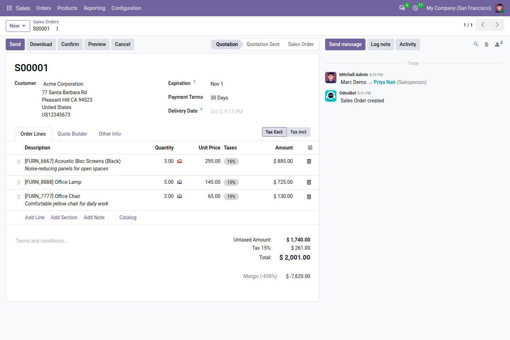
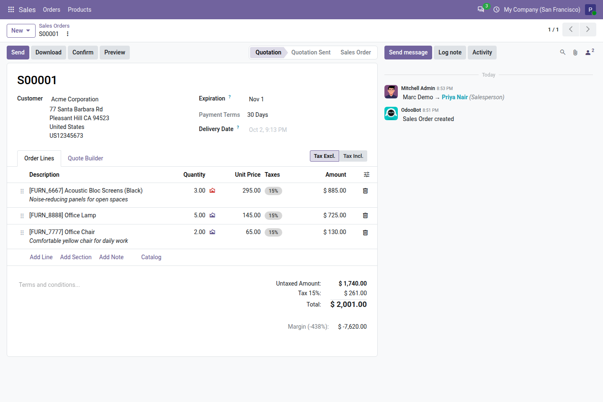
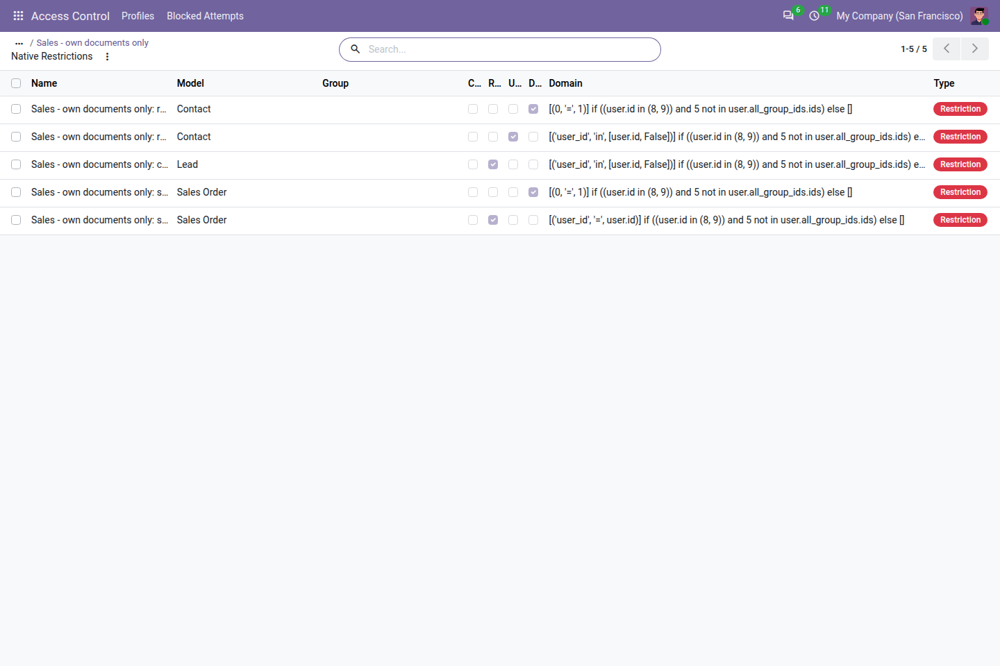
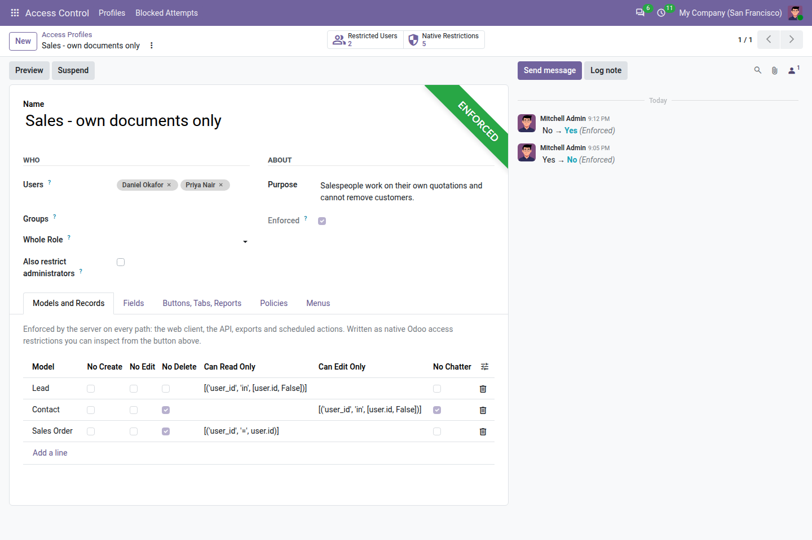
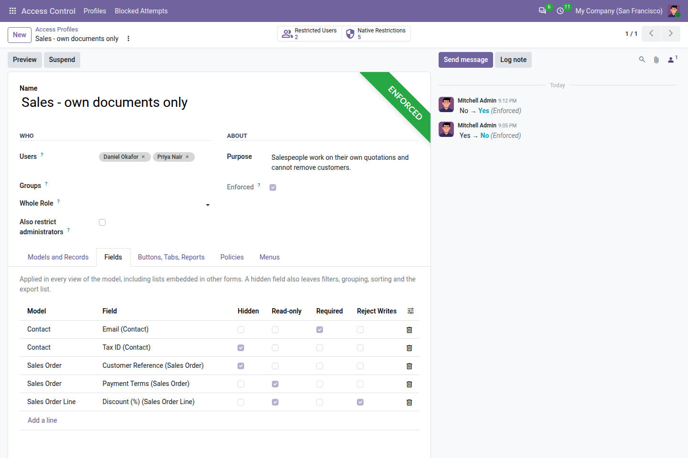
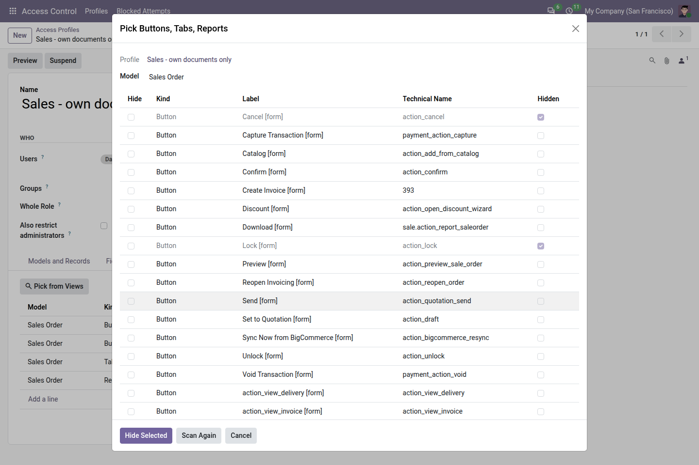
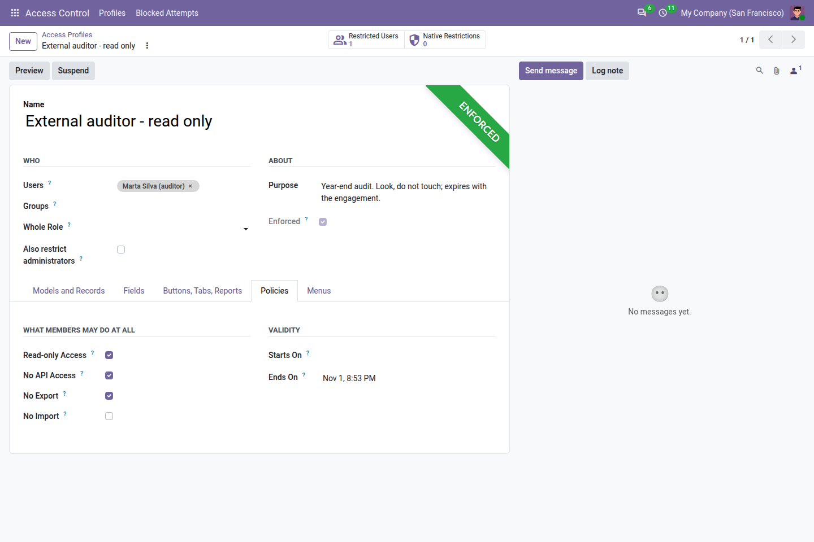
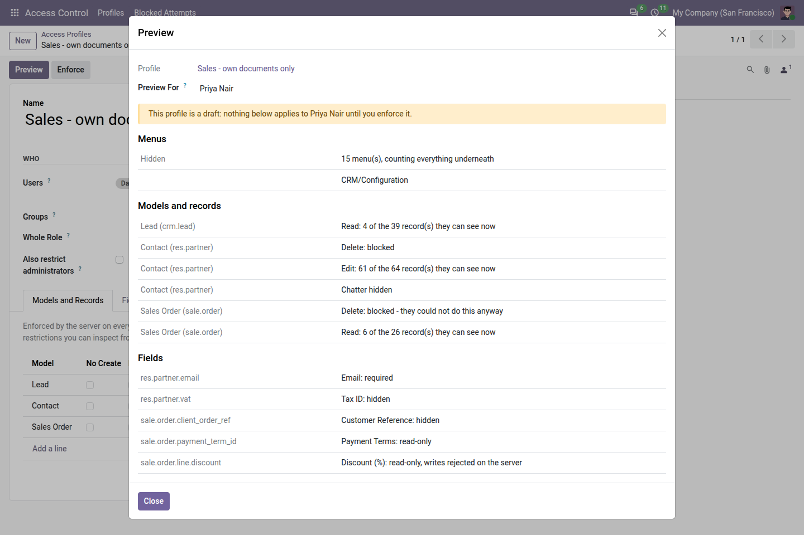
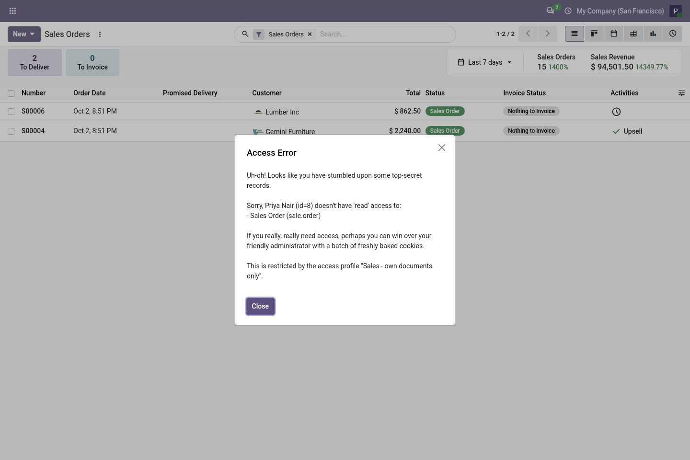
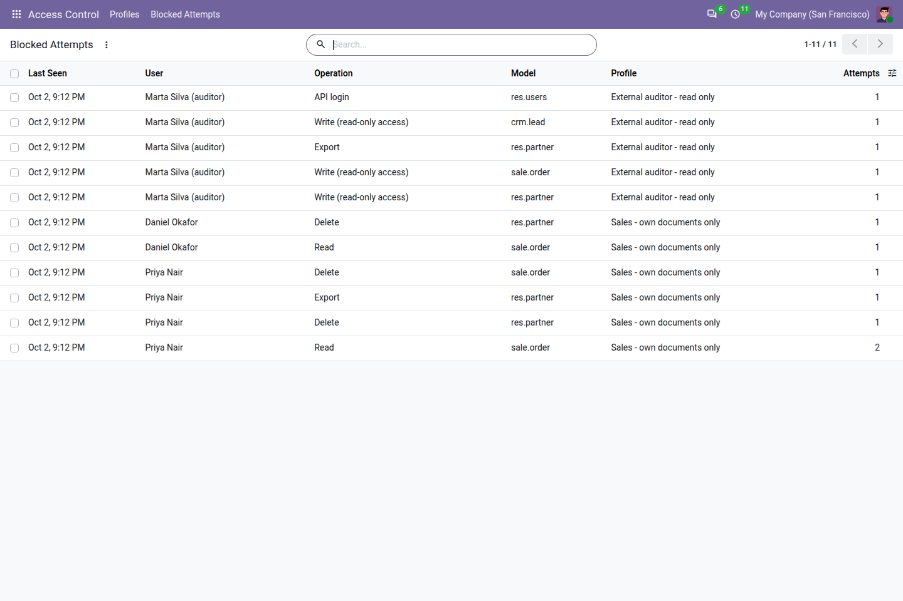

Hide menus, fields, buttons and tabs. Make fields read-only. Block create, edit and delete. Limit which records a role can reach. Preview the result for a real user before anyone is affected — and see afterwards exactly what was blocked.


Odoo 20 replaced access controls and record rules with a single model. A rule with a group grants; a rule without one restricts everybody it applies to. This app writes its model and record restrictions as exactly those native rules.
The web client, the API, exports and scheduled actions all pass through the same check. There is no back door, because nothing was bolted on beside the front one.
Every restriction a profile generates is listed where Odoo lists its own, with its domain. You can read exactly what was created.
Suspend a profile and its restrictions are gone. Uninstall the app and they go with it.

| Models | Block create, edit or delete on any model. The Create, Edit and Delete controls disappear by themselves, because Odoo draws them from the same rule. |
| Records | Limit which records can be read, edited or deleted with an ordinary domain, such as [('user_id', '=', user.id)]. |
| Fields | Hidden, read-only or required, in every view of the model including lists embedded in other forms. A hidden field also leaves filters, grouping, sorting and the export list. Optionally reject writes on the server. |
| Buttons and tabs | Chosen from a list read out of the model's own views, so you tick names instead of looking them up. |
| Reports and actions | Remove entries from the Print and Action menus. |
| Chatter | Remove the messages and activities panel from a model's form. |
| Menus | Hide a menu and everything under it. |
| Read-only access | One switch: the profile's users can look at everything they are allowed to see and change none of it. Their own preferences and saved filters keep working. |
| API access | Refuse XML-RPC, JSON-RPC and API keys for the profile's users at authentication. The browser login is untouched. |
| Export and import | Refused by the server, and the Export button is withdrawn. |




A profile starts as a draft. Pick a user and see what they would lose: which menus, which operations, and how many of the records they see today would remain. Nothing applies until you enforce it.
Every refusal caused by a profile is recorded: who, which operation, which model, which profile. The user's own error message names the profile too, so they know whom to ask instead of filing a bug.
Assign a profile to users, to groups, or to a whole Odoo 20 role — every Light user, every regular User. New people are covered the day they join.
Administrators are left out of every profile unless you explicitly include them, and the access configuration itself can never be restricted.
Give a profile a start and an end. A freeze for the audit, a notice period, a trial — it starts and stops on its own, and says so in its history.
Edit a rule or add a user and it is in force on their next click. No logout, no restart, no cache to clear.



Hiding a field, a button or a menu changes the interface. On its own it does not stop a determined user from reaching the same data through the API. Model and record restrictions do, because the server enforces them, and so do the read-only, API, export and import policies. Use those for anything that has to hold; use hiding to keep screens simple.
Community or Enterprise. Built on Odoo 20's unified access rules, so it does not exist for earlier versions.
No extra Python packages, no other apps to buy, no server configuration.